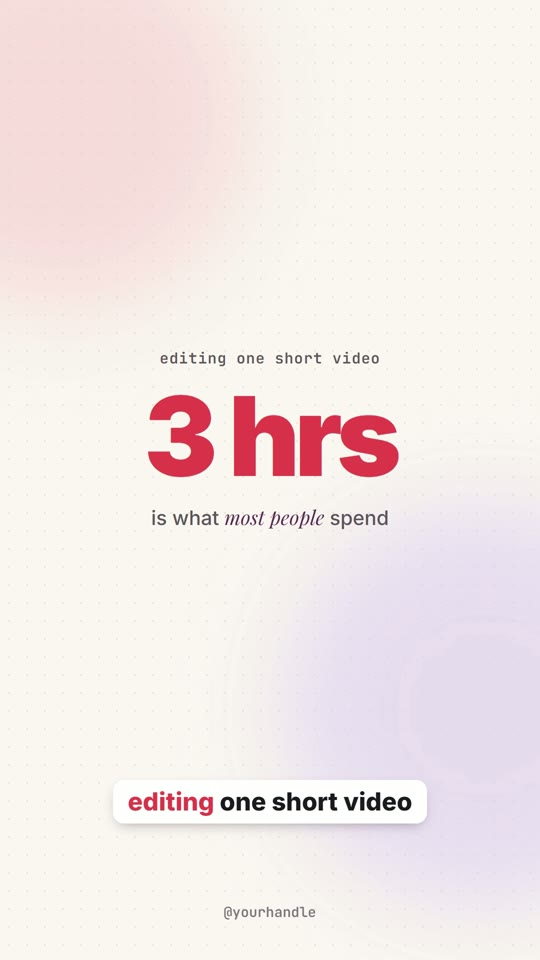
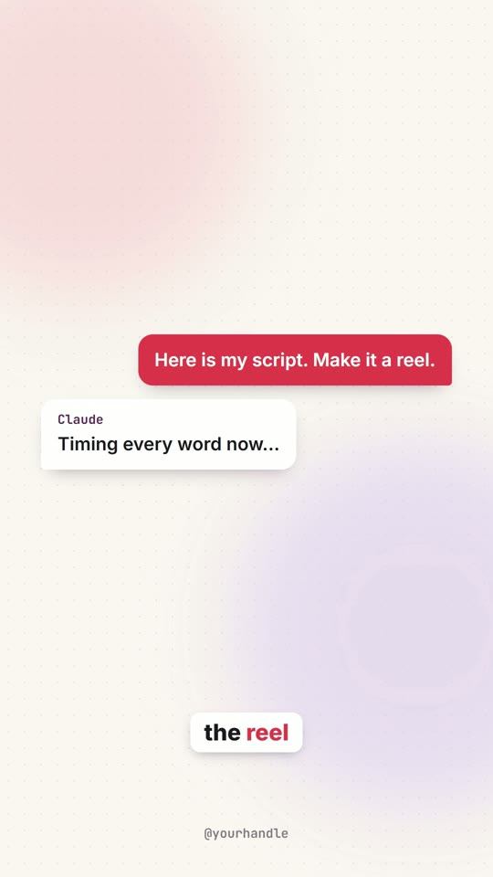
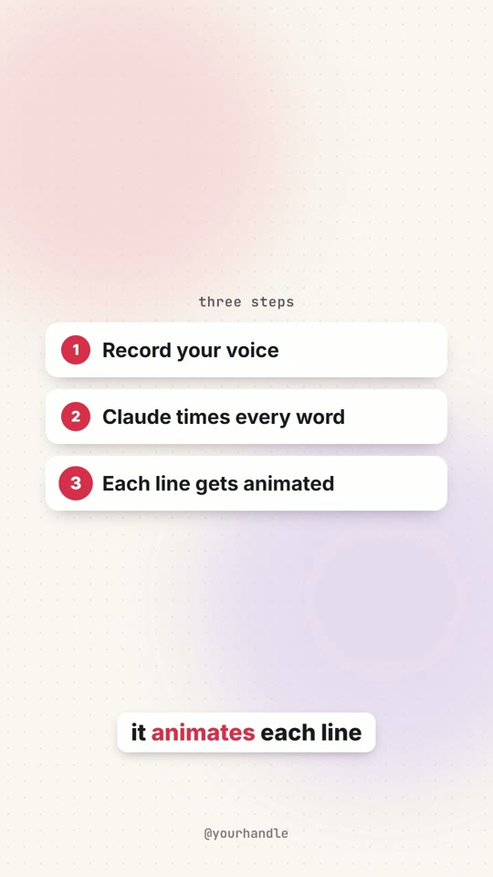
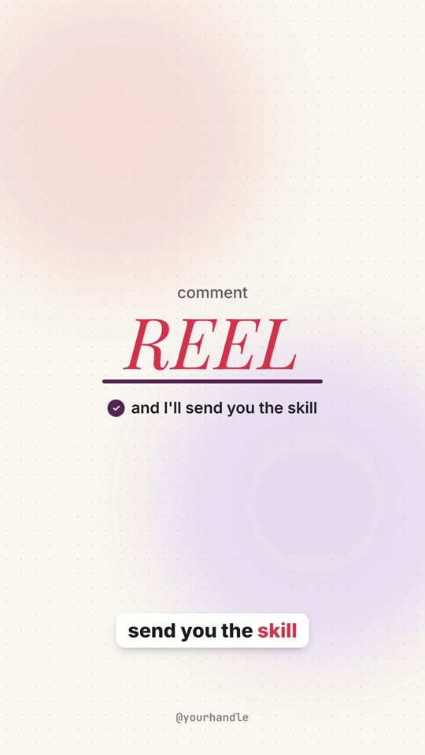

Redraw one scene in ten animation styles. Turn any script into an animated reel, voiced in your own voice, from one prompt in Claude.




A skill is a set of instructions plus small scripts that Claude reads when it needs them. Install the pack once, then just ask in plain words.
| Skill | What it does | Say |
|---|---|---|
| animate-setup | Checks your computer and tells you how to fix anything missing. | "Set up the animate pack" |
| style-remix | Writes the prompts for your scene in 10 styles. It can also make the pictures and clips itself, or bring in files you made with another tool. | "Redraw my scene in 10 styles" |
| style-reel | Builds the "one scene, ten styles" reel, timed to your voice, with your own video in the middle. | "Make the styles reel" |
| script-to-reel | Turns any script into an animated reel with captions, titles, counting numbers, lists, chat bubbles, code, pictures and videos. | "Make a reel from this script" |
Make the 10 styled pictures and clips by pasting prompts in Claude. No install. You need a Higgsfield account with credits.
Time: about 15 minutes. Go to section 02.
Make finished reels with your voice and captions, rendered on your own computer. One-time setup.
Time: about 30 minutes to set up, then a few minutes per reel. Go to section 03.
| Part | Cost |
|---|---|
| The pack, HyperFrames, rendering, captions, the free voice | Free. Runs on your computer. |
| Claude Code | Needs a paid Claude plan (Pro or above) or an API key. |
| AI pictures and clips | Credits on the tool you choose (Higgsfield, a HyperFrames Pro plan, ChatGPT, Gemini…). The skill tells you how much before it makes anything. |
This works in claude.ai, the Claude desktop app or the phone app. Nothing to install.
In Claude, open Settings → Connectors, find Higgsfield and connect it, then sign in to your Higgsfield account. The menu names may move a little between app versions. Higgsfield makes the pictures and clips with your own Higgsfield credits.
Paste the scene prompt from section 08, with the three brackets filled in. Keep it simple: one subject, one pose, a plain background, lots of sky.
Paste a style prompt. Each one starts with "Redraw the scene in the last image as…". If Claude has made other pictures since, say "use the first scene picture". Always redraw from the scene, never from the last style, or your subject slowly changes.
Ask: "Animate it into a 3 second clip. The camera stays still." Use the shortest length the tool allows. Then swap the style and repeat.
Name the files with the style in the name (claymation.png, claymation.mp4…). That folder is all the style-reel skill needs to build the reel. See section 05.
No Higgsfield? The same prompts work in ChatGPT, Gemini, Midjourney, Kling or any tool that edits a picture from a reference. With a HyperFrames Pro plan, the style-remix skill can make all ten pictures and clips for you with one command.
Use the skill in claude.ai too. Zip the skills/style-remix folder and upload it in Claude under Settings → Capabilities → Skills. Claude then knows the prompts and the order without you pasting them.
Open a terminal. On Windows, that's PowerShell. On a Mac, it's Terminal. Run each line, and after installing anything, close and reopen the terminal so it finds the new program.
# Windows winget install OpenJS.NodeJS.LTS winget install Gyan.FFmpeg winget install Git.Git # Mac (needs Homebrew from brew.sh) brew install node ffmpeg git
Use the Code tab in the Claude desktop app, or install it in the terminal:
# Windows (PowerShell) irm https://claude.ai/install.ps1 | iex # Mac or Linux curl -fsSL https://claude.ai/install.sh | bash
Then make a folder for your videos, open it in the terminal and type claude. Sign in when it asks.
HyperFrames (free, by HeyGen) renders HTML into video. Its skills teach Claude the format. The pack adds the reels.
claude plugin marketplace add heygen-com/hyperframes claude plugin install hyperframes@hyperframes claude plugin marketplace add ruturajjena/claude-animate-pack claude plugin install animate-pack@explainedbyruturaj
You can also type these inside Claude Code with a slash: /plugin marketplace add …. Then restart Claude Code.
In Claude Code, say "set up the animate pack". It runs a check and walks you through anything missing:
OK Node.js 22+ · OK FFmpeg · OK HyperFrames CLI MISS Free voice (optional) pip install kokoro-onnx soundfile
Paste a script and say what you want. Claude does the steps below with the script-to-reel skill. You only check the result.
"Make a reel from this script, in my voice from take.m4a: …" Write about 2.5 words a second, so 30 seconds is roughly 75 words. Use short sentences, one idea each.
Claude converts your recording, or makes the free voice, and transcribes it on your computer. That gives every word its exact time.
Claude writes beats.json: one animated beat per idea, each starting on the word that says it. The beat types are title, stat, list, chat, code, image, video, quote and cta.
It runs npx hyperframes check, looks at frames, fixes problems, then renders out/reel.mp4 (1080×1920).
A list beat: each step pops in on the word that says it. Captions follow the voice.
npx hyperframes preview).Try the demo first. The pack has examples/script-to-reel-demo. Say "build the script-to-reel demo" to see it work end to end before writing your own.
The reel runs in five parts, all timed to your voice: a fast list of styles where each card flips in on its name, a grid of all ten, your own video playing in a phone, "comment WORD", and "save this".
Say "Redraw my scene in 10 styles: [your idea]". The style-remix skill offers three routes:
| AHiggsfield | Connector in Claude. Claude makes them while you watch. |
| BHyperFrames | With a Pro plan, one command makes all 10 pictures and clips: remix.mjs make. |
| CAny tool | Make them anywhere, put them in one folder, then: "import my styles from this folder". |
Keep the pattern: the ten style names in one breath, one line on how, one line about your middle video, then the comment CTA, then "save this". Here's an example:
Pixel art, claymation, toy bricks, comic book, paper cutout, retro anime, low poly, knitted wool, risograph, miniature diorama. Ten styles from one scene, with one prompt each, right inside Claude. And whole reels like this one, animated in my own voice from one script? That's my free skill pack. Comment ANIMATE and I'll send you all ten prompts, the skill pack and the setup guide. Save this so you don't lose it.
Say "Make the styles reel with my voice, and put my last reel in the middle." Claude copies reel.example.json, sets your title, handle, comment word and middle video, then builds, checks and renders it.
Your comment word must match your auto-DM keyword, or people who comment get nothing.
| Voice | How | Quality |
|---|---|---|
| Your own recording | Record on your phone in a quiet room, holding it about a hand's width from your mouth. Give Claude the file. | Best |
| A clone of your voice | ElevenLabs, or Voicebox (free, runs on your computer). Export the audio and give Claude the file. | Great |
| Free on-device voice | pip install kokoro-onnx soundfile once, then ask for "the free voice". | Good for drafts |
Music: use only tracks you have the rights to, such as your phone editor's library or a royalty-free site. Keep it quiet under the voice. The default level is 0.12. You can also add trending audio in Instagram itself when you post.
Before posting: watch it once with the sound off. If the captions alone tell the story, it's ready. Check any numbers or claims the reel shows.
| You see | Do this |
|---|---|
node, npx or ffmpeg "not recognized" | Close and reopen the terminal and Claude after installing. Then run the check again. |
| The skills don't show up | Restart Claude Code. Type /plugin and check that animate-pack is enabled. |
| "Check failed" | Say "fix the check errors". Usually it's text over text or text too small. Warnings about short captions are normal. |
| "HyperFrames Pro feature" | Making pictures with HyperFrames needs Pro. Use route A or C instead. Nothing was charged. |
| "kokoro-onnx is not installed" | pip install kokoro-onnx soundfile, or use your own recording. |
| A caption word is spelled wrong | Make sure script.txt matches what was said, word for word, then build again. |
| A style card lands at the wrong moment | Say "the claymation card is late". Claude adds the word as it was heard. |
| Rendering is slow | Normal for the first render. For quick previews: --quality draft. |
Scene (fill in the brackets):
Each style: paste this, then add the style's line below.
Animate (one styled picture at a time):
Every prompt is also in the repo as prompts/10-styles.md, ready to copy, and in skills/style-remix/styles.json for the skill.
Put each line where the template says [style line], and its name where it says [style].